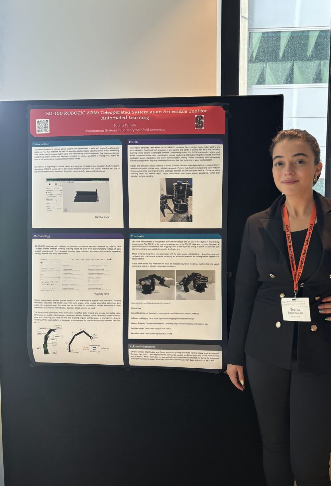
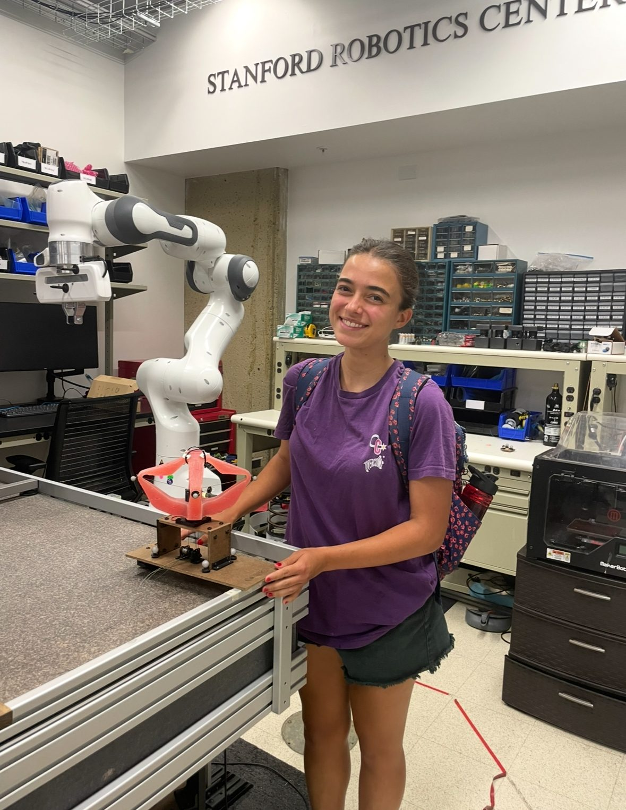
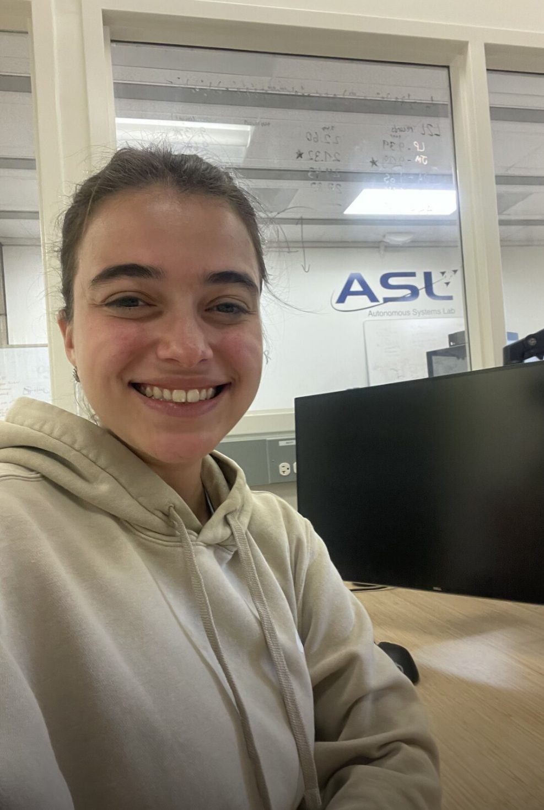
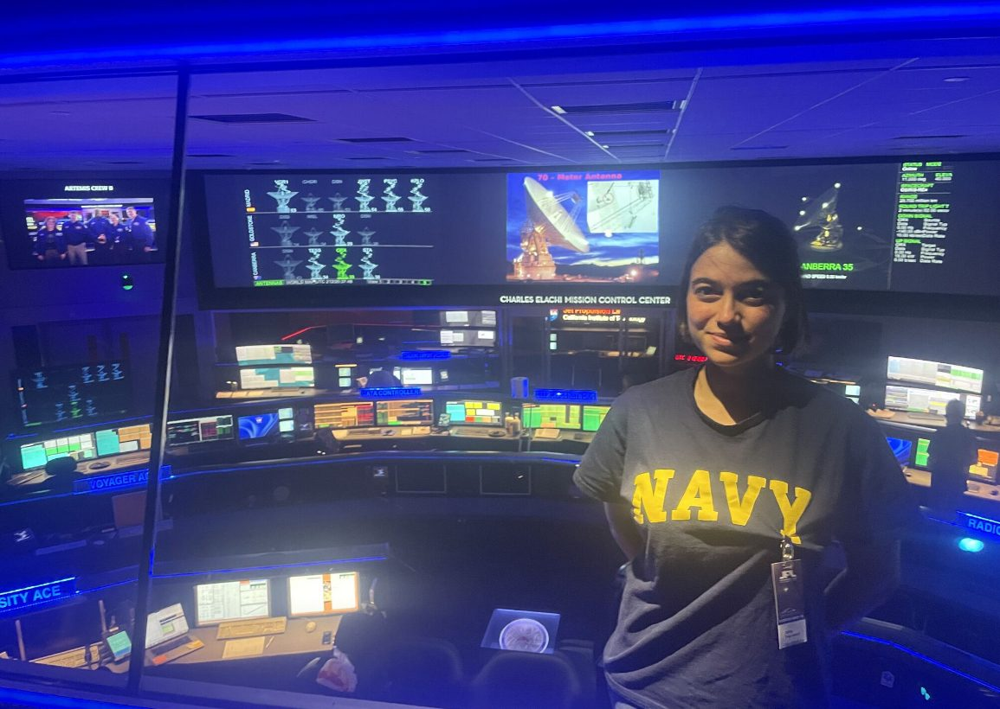
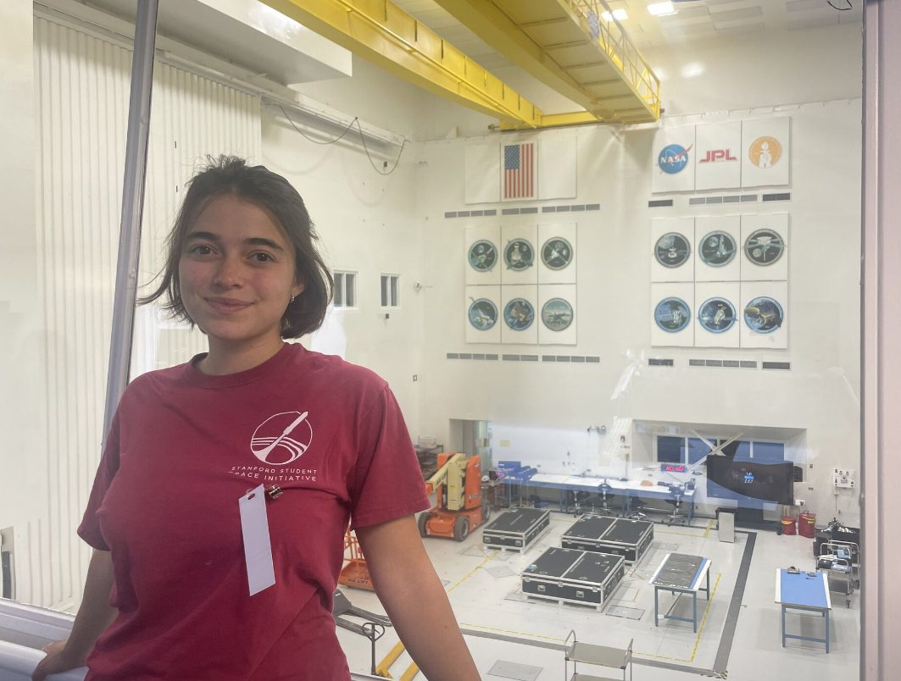
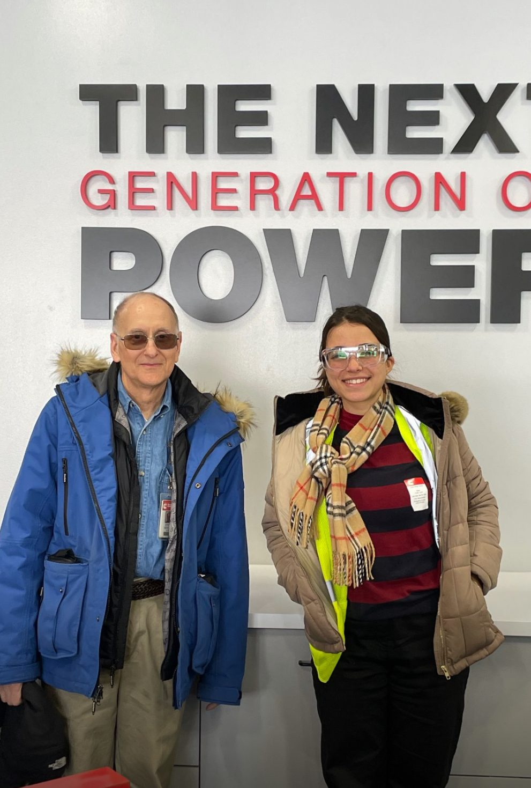

Robotics
My robotics work outside of SERC — research at Stanford's Autonomous Systems Lab, a first-author poster at ICAPS/CPAIOR 2025 Melbourne, facility access at NASA JPL, and an engineering stint at Cummins.
SO-ARM100 · Stanford ASL

Teleoperated System as an Accessible Tool for Automated Learning.
A teleoperated SO-ARM100 robotic arm designed for free-flyer platforms in microgravity environments. Integrates with LeRobot (Hugging Face's open-source robotics learning framework) for imitation learning. Addresses servo calibration, power distribution, and UART communication latency challenges.
Work done at Autonomous Systems Lab, Stanford University. I was brought on to the project through Matt Foutter, who interviewed me, offered me the opportunity, and scoped the robot gripper plan. I was then mentored through the SO-ARM100 build and experiments by Dan Morton. Future work: integrated dynamic modeling and ML-based control for microgravity conditions.
Stanford — in the lab


JPL · Behind the scenes


Hosted by Dr. Shannon Statham and Dr. Federico Rossi at JPL while I was at Stanford — behind-the-scenes facility tours and conversations about their mission work. Also met researchers at Caltech and Berkeley, and connected with Lara Rutherford, the youngest female pilot (a fellow Stanford student) to talk flying.
Timeline
